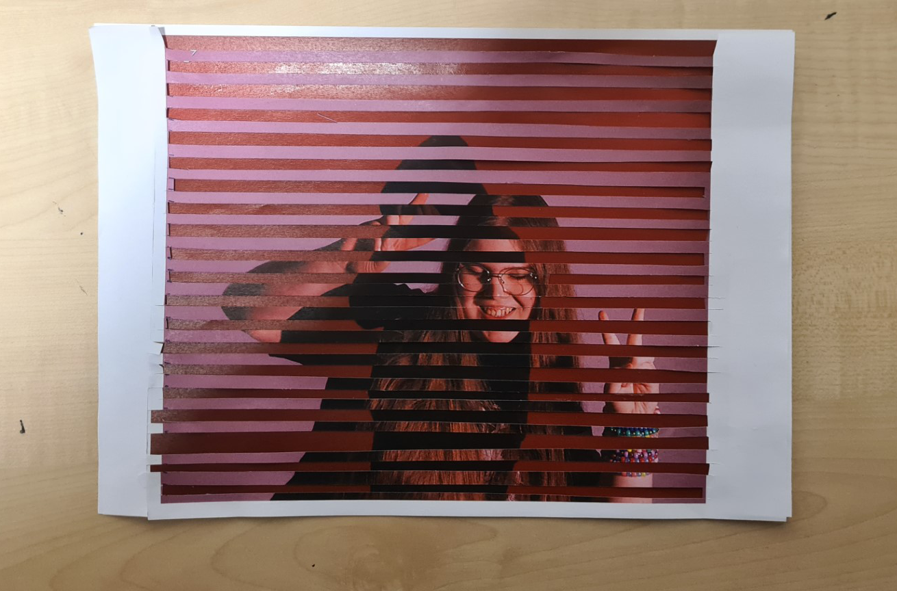

Reconciliation

This picture was made by combining Don't perceive me please and Perceive me please. I did this to represent
the fact that despite pre and post transition me being the same person it doesn't feel like it, and the fact
I have actively had to work to reconcile the two.